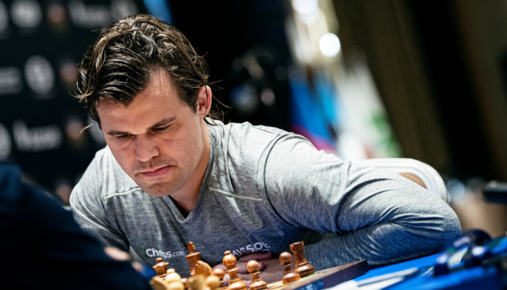

Пантеон Шахових Геніїв
"Я взагалі рідко граю проти комп'ютерів, тому що вони просто змушують мене почуватися дурним і нікчемним."
©Магнус Карлсен

Магнус Карлсен
Сучасність (1972 – дотепер)
Сучасні шахи вимагають абсолютного універсалізму та здатності адаптуватися до постійно зростаючого впливу комп'ютерів.
- Роберт "Боббі" Фішер (1943–2008) Чемпіон Світу (1972–1975). Легендарний американець. Його тріумф над Спаським став шаховим "Матчем Століття". Фішер підняв стандарти дебютної підготовки та вимагав бездоганної точності. Його ультимативний стиль надихнув мільйони.
- Карпов vs Каспаров Протистояння Анатолія Карпова та Гаррі Каспарова (1985–2000) визначило шахи кінця ХХ століття. Це була боротьба двох титанів, що демонструвала позиційну глибину проти динамічної сили. Каспаров утримував титул найдовше в сучасній історії та став першим, хто активно використовував комп'ютери для тренувань.
- Магнус Карлсен (1990) Чемпіон Світу (2013 – 2023). Норвезький феномен, який є найкращим універсалом в історії. Карлсен домінує завдяки своїй майстерності ендшпілю, здатності вичавлювати перемогу з рівних позицій та надзвичайній витривалості. Він є обличчям шахів у цифрову еру, успішно поєднуючи людську інтуїцію з комп'ютерним аналізом.